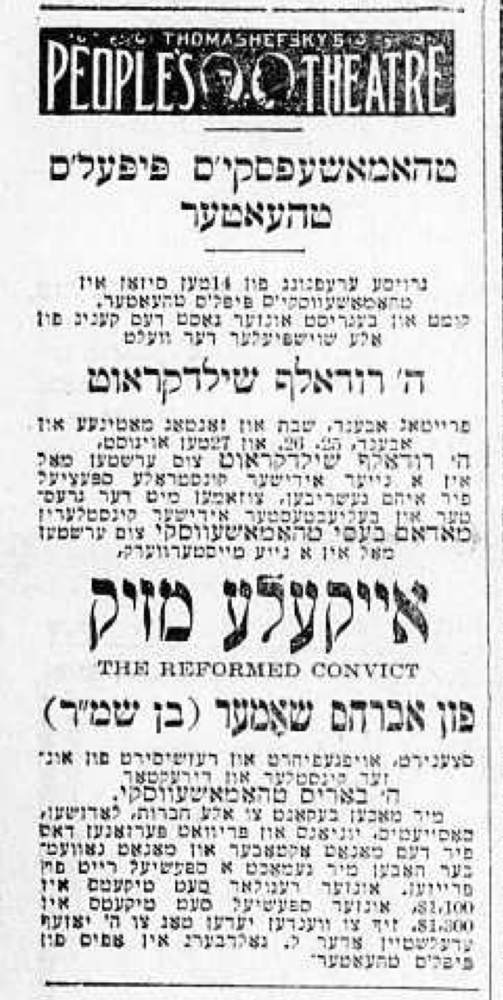

36 January 18th, 1947
Link to Forverts edition
A dance in the middle of the street. – The first encounter between the two famous artists Rudolph Schildkraut and David Kessler.
The closer I got to Kessler, the more I realized that while that he really loved to be flattered, he did not respect flatterers… He needed to have them around him. He enjoyed that they “ate fish”1 over him, as we used to say in the theater dialect. But he did not think highly of them, and on many occasions he showed contempt for them. Many times, he told them off so sharply that they’d never forget it… I never flattered him.
I loved what a great artist he was, and I maintained our friendship as a collegial one. Whenever I ran into him I was always happy to see him, and I could tell that from the way he behaved around me that he was also happy to see me. Once, on a beautiful summer day, I ran into him on 2nd avenue, not far from his theater. Since he was in a good mood, he stopped me to chat about how the actors of the old times compared to the actors of today2. He offered some fitting remarks, sharing this and that in his own characteristic way…
3According to Kessler, one had a yellow voice, and one had the voice of a folding bed… One spoke and lived like a man, but when he took the stage, he spoke unnaturally, and his voice came out like he had put an odd sort of pipe in his throat. The other behaved on stage as though he could swallow an umbrella…
He had something particular to say about everyone, both the old and young actors. He explained that the real virtue of the older actors was how they could do anything needed while performing on the stage.
– Take me, for example. - he said. - I can do everything…
Just then it occurred to me to kibitz4 a little with him, so I replied5:
– No, Mr. Kessler, you6 can’t do everything. There are some things on the stage that you can’t do…
– I can’t do everything? - he retorted. - Ok then, tell me exactly what I can’t do.
– You can not dance, - I teased him in jest. - You can’t dance, but I can.
You had to hear it, how he argued back at me:
– I can’t dance?!… I, you say, can’t dance?!
I spared no effort and straight away, right there on the spot, I did a little dance just like they did on the American stage.
– Nu, Mr. Kessler, can you do that too?
– Of course I can do that! - he answered with a shriek, which was so characteristic of him. - I will show you… I can do it…
And without thinking about it at all, he started to dance in the middle of the street. But you could tell it was hard for him. And just then a Jew stopped to watch, and when he saw how Kessler danced, he waved his hand and said:
– Listen here, Mr. Kessler, and leave the dancing to Kestin. You’re better off sticking to playing Hershele Dubrovner7… No one knows this as well as you…
Kessler laughed heartily, and while laughing he said to me:
– Kasey, you win…
He sometimes gave little nicknames to people, and he never called me anything other than - “Kasey”.
We remained good friends even after I no longer played with him in the same theater. The truth was, despite the fact that he was often hard to put up with his caprices during performances or in rehearsals, I had no great desire to leave him. When he started to put together a new troupe for his theater, including Maurice Schwartz, Bernstein, and other famous actors, I was also included. But things turned out differently, and I ended up going back to Edelstein and Thomashefsky in People’s Theater. Edelstein wanted me to come back, and I always had a bit of weakness for him because he had always treated me very well, and I couldn’t forget how he had stood up for me on many occasions.
At that time, Edelstein had hired the famous German-Jewish actor Rudolph Schildkraut to play in People’s Theater, and that in and of itself was quite a sensation because Schildkraut had come to America with a German troupe. Schildkraut had made a worldwide name for himself playing Shakespeare’s Shylock as well as acting in other plays from the world repertoire. He spoke a rich, delicious Yiddish, and everyone wanted to snatch him up to play on the Yiddish stage. Everyone was anxious to see him perform.
In People’s Theater, Rudolph Schildkraut appeared in his repertoire; he played Shakespeare’s Shylock and King Lear, and also Sholem Asch’s Got fun Nekome. In that same season, he appeared in Abraham Shomer’s new play Eykele Mazik, and his acting made a big splash8.

{kind=link}
This was in 19119, and it’s also worth mentioning that this was the first time in his life Rudolph Schildkraut saw Kessler perform. In fact, he saw him perform in Got fun Nekome in the same role he himself had also played. Schildkraut was so enthusiastic about Kessler’s acting that whenever Kessler performed, Schildkraut came to the theater to see him play. And as for Kessler, he was also very enthusiastic about Schildkraut’s acting that he never missed seeing him perform either.
Both great artists thought very highly of each other. In the show Eykele Mazik, Schildkraut played the role of good youth, a thief, and he was really excellent in the role. I was given the role of the second thief, and when Schildkraut himself told me that he enjoyed how I played the role, I was really over the moon thrilled.
Like many great artists, Rudolph Schildkraut also had his caprices. But he was good man who did not behave arrogantly when in the company of the other Yiddish actors. He was always so approachable with us, so much so that you could entirely forget that he was such a famous actor with worldwide renown.
Other actors, and indeed others from the theater world, knew this and took advantage of him, and sometimes treated him a little too familiarly. But he knew how to deal with these types of people who didn’t know when to put a pin in it10, and he would adopt a tone that said - “Don’t forget and remember who I am - I am Rudolph Schildkraut!”
During the season when Schildkraut played in People’s Theater, he had some trouble because he often became hoarse and couldn’t perform. This always happened to him when he performed in any theater. His hoarseness not only tormented him, but also for those who had hired him. And when it became clear in People’s Theater that, because of his frequent hoarseness, you could never really know how well he was doing, Thomashefsky started to put on operettas. For me, this was not good because it was the same old story - my acting fate was in the hands of how well Thomashefsky was getting along with his wife Bessie: When things were good between them and the sholem bais between them was not hanging like a thread, I usually was given only a tiny little role - or no role at all.
But when he got really angry with her and rumors started circulating that it might end in divorce, I was given a good role - because I was given the roles that Bessie would have otherwise played…
This is what it was like in People’s Theater, and it was like this later too when we moved to the new National Theater.
In the end, as everyone knows, their marriage did end in divorce. Bessie Thomashefsky left her husband, and for a little while she went off to Europe. And when she came back, she was already starring in other theaters like a self-made star.
I also left Thomashefsky’s troupe after the season11 ended. Over the summer, I went with my family to the mountains12. I had enough money saved that my wife and my three children could afford to do anything they wanted, and it seemed to me that God and man alike were jealous both of how well I had done and my three wonderful children - two sons and a daughter13.
I still didn’t know where I would work next season, but I didn’t worry about it at all. My name was now so well-known in the theater world that I didn’t have to worry. I was sure that there was a theater somewhere that would of course want to engage me, and I’d end up with a good salary.
And indeed, I did get just one offer, but two - one from Mike Thomashefsky who wanted me to come back to Philadelphia and play in his theater, and the other from the new Novelty Theater which the famous actress Sara Adler had decided to open in Brooklyn, not far from the Williamsburg Bridge14. Just like Bessie Thomashefsky, Sara Adler had also become a self-made star. When she rented the Novelty Theater for the 1912/1913 season, she was to play together with Rudolph Schildkraut, and they had already decided to open the season with Tolstoy’s famous drama Kroitzer Sonata15.
To have the chance to perform again with the great Rudolph Schildkraut and on top of that with talented actress Sara Adler, was of course a great pleasure, and I accepted their offer right away. And so it turned out that I would not go back to Philadelphia - better to play in the Novelty Theater…
idiom↩︎
today being mid-1910s↩︎
Plenty of idioms here; I have given a direct translation, since I do not know the precise connotation of the idioms↩︎
In this context, kibitz essentially means to tease/mess with him↩︎
Joseph Rumshinsky also relays a version of this story in this article he wrote about Sam in Forverts on April 17th, 1936.↩︎
It is worth noting that Sam uses the formal “you” when speaking to Kessler↩︎
Lead character in Jacob Gordin’s play Gott, Mentsh, un Tayvl↩︎
There are two interesting articles about this play. First is a review of Schildkraut in the play published in Di Vahrhayt. Second is an article from before the premiere when the theater opened the dress rehearsals for audiences to attend. According to the article, this was the first time a Yiddish theater had a public dress rehearsal.↩︎
Correct!↩︎
I have attempted an idiom translation here: וואו מ׳דאַרף אוועקשטעלן א פּינטעלע↩︎
1911/1912↩︎
Presumably the Catskills↩︎
Sam’s three children were Fred (Freddie; born 1894), Lillian (Lillie; born 1898), and Louis (Louie; born 1902), and all sadly died relatively young. Freddie’s lungs were severely injured after World War I, and he spent his remaining years chronically ill. He died in 1936 at the age of 40 of associated complications. Lillie (my great-grandmother) died in 1946 at age 48 of ovarian cancer. Louie died in 1956 at age 52. All three worked in the theater at some point; Freddie worked in box offices, Louie was a theater manager, and Lillie acted for a short time in her youth, until she married a businessman from Philadelphia at the age of 21/22. Of all his children, only Lillie married and had children. She had two daughters: Connie (Constance; One can speculate that she was named based on Sam’s original last name, Konstantinovsky) and Meta (my grandmother, who went by her middle name; Her first name was Ziporah. She was named for her father’s mother, but one can also speculate that she was also named for her maternal grandmother Feige; Ziporah means “bird” in Hebrew, and Feige means “bird” in Yiddish). Meta was 15 years old when Lillie passed away. It is also worth noting that Suzi, Sam’s wife, passed away in 1946 after a long illness, during which Sam temporarily retired to take care of her. She convalesced in her daughter Lillie’s home. This sad legacy is a large part of why Sam’s legacy was unknown to my family for so many years.↩︎
The Novelty Theater was located at S 4th and Driggs↩︎
Adapted by Jacob Gordin into Yiddish, this play very commonly put on in the Yiddish Theater↩︎